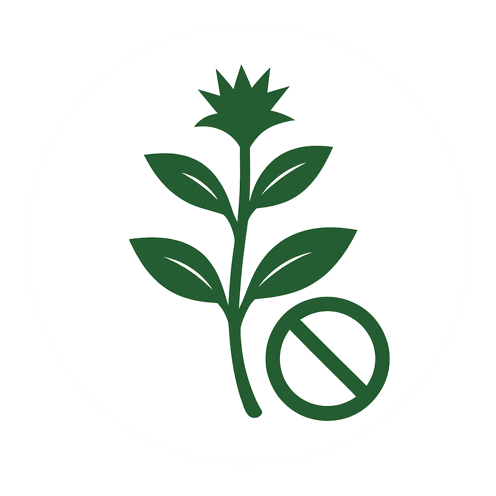

Research Themes

Climate–Vegetation Modeling
We develop dynamic models that quantify how vegetation systems respond to climate variability using Earth observation and in-situ data.

Phenology & Drought Monitoring
Monitoring plant seasonal patterns to detect stress signals and support early drought warning systems across Africa.

UAV–Satellite Calibration
Using drone data to validate and fine-tune remote sensing models for more accurate vegetation and land health assessments.

Species Distribution & Conservation
Modeling species habitat preferences to guide ex situ conservation planning, especially for understory and threatened taxa.

Invasive Species
Studying the spread and ecological impacts of invasive plant species on biodiversity, soil health, and ecosystem resilience, with a focus on developing management strategies under changing climate conditions.

Watershed & Basin Dynamics
Analyzing hydrological systems to support ecosystem-based water management and climate-resilient catchment planning.